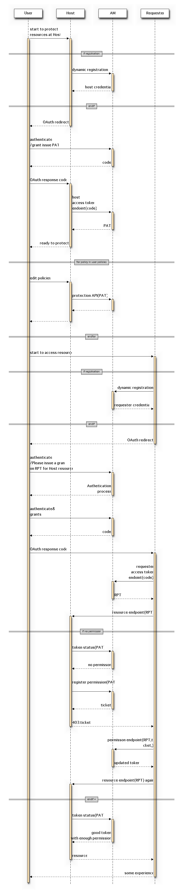

User-Managed Access (UMA) Core Protocol¶
Based on http://tools.ietf.org/html/draft-hardjono-oauth-umacore-05
Abstract¶
This specification defines the User-Managed Access (UMA) core protocol. This protocol provides a method for users to control access to their protected resources, residing on any number of host sites, through an authorization manager that governs access decisions based on user policy.
(draft 05)

Table of Contents
- User-Managed Access (UMA) Core Protocol
- Abstract
- 1. Introduction
- 2. Protecting a Resource
- 3. Getting Authorization and Accessing a Resource
- 3.1. Requester-Host: Attempt Access at Protected Resource
- 3.2. Host-AM: Register a Permission
- 3.3. Host Determines the Requester Permission Token Status
- 3.4. Requester-AM: Ask for Requester Permission Token and Permission
- 3.5. Claims-Gathering Flows
- 4. Error Messages
- 5. Specification of Additional Profiles
- 6. Security Considerations
- 7. Privacy Considerations
- 8. Conformance
- 9. IANA Considerations
- 10. Example of Registering Resource Sets
- 11. Acknowledgments
- 12. Issues
- 13. References
- Note
1. Introduction¶
The User-Managed Access (UMA) core protocol provides a method based on OAuth 2.0 [OAuth2] for users to control access to their protected resources, residing on any number of host sites, through a single authorization manager (AM) that governs access decisions based on user policy.
Note
- Access Control on User Resources
- On any number of OAuth Resource Server
- Authorization Manager
- User Policy Base
- User Policy
- (TDB)
There are numerous use cases for UMA, where a resource owner elects to have a third party to control access to these resources potentially without the real-time presence of the resource owner.
Note
- user delegates to resource requesters to access his resource
A typical example is the following: a web user (authorizing user) can authorize a web app :(term:requester) to gain one-time or ongoing access to a resource containing his home address stored at a “personal data store” service (host), by telling the host to act on access decisions made by his authorization decision-making service (authorization manager or AM).
Note
- Authorizing User = Resource Owner..
- Requester/Requesting Pary = Client
- Host = (Resource) Server
- Authorization(Access) Manager = Authorization Server, Connect OP
Note
- Requesting Party
The requesting party might be an e-commerce company whose site is acting on behalf of the user himself to assist him/her in arranging for shipping a purchased item, or it might be his friend who is using an online address book service to collect addresses, or it might be a survey company that uses an online service to compile population demographics. Other scenarios and use cases for UMA usage can be found in [UMA-usecases] and [UMA-userstories] .
- Trust Model
- (TBD)
Practical control of access among loosely coupled parties requires more than just messaging protocols. This specification defines only the technical “contract” between UMA-compliant entities; its companion Trust Model specification [UMA-trustmodel] defines the expected behaviors of parties operating and using these entities. Parties operating entities that claim to be UMA-compliant MUST provide documentation affirmatively stating their acceptance of the binding obligations contractual framework defined in the Trust Model specification.
Note
- PEP & PDP separation
In enterprise settings, application access management often involves letting back-office applications serve only as policy enforcement points (PEPs), depending entirely on access decisions coming from a central policy decision point (PDP) to govern the access they give to requesters. This separation eases auditing and allows policy administration to scale in several dimensions.
UMA makes use of a separation similar to this, letting the authorizing user serve as a policy administrator crafting authorization strategies on his or her own behalf.
The UMA protocol can be considered an advanced application of [OAuth2] in that it profiles, extends, and embeds OAuth in various ways. In the big picture, an AM can be thought of as an enhanced OAuth authorization server; a host as an enhanced resource server; and a requester as an enhanced client, acquiring an access token and the requisite authorization to access a protected resource at the host.
The UMA protocol has three broad phases, as shown in Figure 1.
The Three Phases of the UMA Protocol
+-----+----------------+
| UA | authorizing |
+-------Manage (A)--| | user |
| +-----+----------------+
| Phase 1: | UA |
| protect a +----------------+
| resource |
| Control (B)
| |
v v
+-----------+ +-----+----------------+
| host |<-Protect-(C)-|prot | authorization |
| | | API | manager (AM) |
+-----------+ +-----+----------------+
| protected | | authorization |
| resource | | API |
+-----------+ +----------------+
^ |
| Phases 2 and 3: Authorize (D)
| get authz and |
| access a resource v
| +----------------+
+-------Access (E)--------| requester |
+----------------+
(requesting party)
Figure 1
In broad strokes, the phases are as follows:
In more detail, the phases work as follows:
Protect a resource:
The authorizing user has chosen to use a host for managing online resources (“A”), and introduces this host to an AM using an OAuth-mediated interaction that results in the AM giving the host a protection API token (PAT).
The host uses AM‘s protection API to tell the AM what sets of resources to protect (“C”).
Out of band of the UMA protocol, the authorizing user instructs the AM what policies to attach to the registered resource sets (“B”).
Requesters are not yet in the picture.
Get authorization:
This phase involves the requester (along with its operator, the requesting party or that party’s human agent), host, and AM.
It may also involve synchronous action by the authorizing user if this person is the same person as the requesting party.
This phase is dominated by a loop of activity in which the requester approaches the host seeking access to a protected resource (“E”).
In order to access the protected resource at the host, the requester must obtain a requester permission token (RPT) from the AM.
The requester is then directed to the AM ask for authorization for the permissions it seeks.
In doing so, it must demonstrate to the AM that it satisfies the resource owner’s authorization policy governing the sought-for resource and scope of access if it does not already have the required access permission (“D”).
To use the AM’s authorization API in the first place, the requesting party has to consent to deal with the AM in providing claims, which results in the requester obtaining an authorization API token (AAT) from the AM.
Access a resource:
This phase involves the requester successfully presenting an access token that has sufficient permission associated with it to the host in order to gain access to the desired resource (“E”).
In this sense, it is the “happy path” within phase 2.
In deploying UMA, implementers are expected to develop one or more UMA Profiles (described in Section 5) that specify and restrict the various UMA protocol options, according to the deployment conditions.
- Phase 1
UMA Phase 1 Resource Procection Phase.
- Phase 2
UMA Phase 2 Authorization Phase.
AM issues access token to requester with OAuth protocol.
- Phase 3
UMA Phase 3 Resrouce Access Phase.
- PAT
Protection API Token - Host — (PAT) –> AM
- AAT
Authorization API Token - Requester — (AAT) —> AM
- RPT
Requester Permission Token - Requester — (RPT) —> Host
Note
- Formerly known as Requester Access Token
Note
The requester access token has been split into two tokens and all of the tokens have been renamed.
The host access token is now the PAT. (HAT -> PAT )
The requester access token used at the AM’s API is now the AAT, (RAT -> AAT) and consists of vanilla OAuth.
The requester access token used at the host is now the RPT.
(draft 05)
1.1. Notational Conventions¶
The key words ‘MUST’, ‘MUST NOT’, ‘REQUIRED’, ‘SHALL’, ‘SHALL NOT’, ‘SHOULD’, ‘SHOULD NOT’, ‘RECOMMENDED’, ‘MAY’, and ‘OPTIONAL’ in this document are to be interpreted as described in [RFC2119].
Unless otherwise noted, all the protocol properties and values are case sensitive.
The assignment in this document of URI labels is temporary, awaiting final standardization in the eventual standards body within which this specification is taken up as a work item.
1.2. Basic Terminology¶
UMA introduces the following terms, utilizing OAuth and other identity and access management concepts.
- An UMA-defined variant of an OAuth end-user resource owner; a web user who configures an authorization manager with policies that control how it assigns access permissions to requesters for a protected resource.
- An UMA-defined variant of an OAuth authorization server that carries out an authorizing user’s policies governing access to a protected resource.
- protected resource
- An access-restricted resource at a host, which is being policy- protected by an AM.
- host
- An UMA-defined variant of an OAuth resource server that enforces access to the protected resources it hosts, as governed by an authorization manager.
- claim
- A statement of the value or values of one or more identity attributes of a requesting party. A requesting party may need to provide claims to an authorization manager in order to satisfy policy and gain permission for access to a protected resource.
- requester
requesters - An UMA-defined variant of an OAuth client that seeks access to a protected resource.
- requesting party
- A web user, or a corporation or other legal person, that uses a requester to seek access to a protected resource. If the requesting party is a natural person, it may or may not be the same person as the authorizing user.
- resource set
resource sets - A host-managed set of one or more resources to be AM- protected. In authorization policy terminology, a resource set is the “object” being protected.
- scope
A bounded extent of access that is possible to perform on a resource set. In authorization policy terminology, a scope is one of the potentially many “verbs” that can logically apply to a resource set.
Whereas OAuth scopes apply to resource sets that are implicit, UMA associates scopes with explicitly labeled resource sets (“objects”).
- permission
permissions - A scope of access over a particular resource set at a particular host that is being asked for by, or being granted to, a requester. In authorization policy terminology, a permission is the “verb” portion of an entire policy that also includes a “subject” (requesting party) and an “object” (resource set).
(draft 05)
1.3. Endpoints, Endpoint Protection, and Tokens¶
Various UMA entities present APIs for other UMA entities to use. These APIs are as follows:
- The AM presents a protection API to the host, as standardized by this specification. This API is OAuth-protected, requiring a host access token (issued by the AM) for successful access (see Section 2.3 for this issuance process).
- The AM presents an authorization API to the requester, as standardized by this specification. This API is OAuth-protected, requiring a requester access token (issued by the AM) for successful access (see Section 3.2 for this issuance process).
- The host presents a protected resource to the requester, which can be considered – and may in fact be – an application-specific or proprietary API. This API is UMA-protected, requiring a requester access token (issued by the AM) and sufficient permissions (also issued by the AM) for successful access (see Section 3.5 for this latter issuance process).
Note
- These are the “Protection API” endpoint set.
The AM presents standard OAuth endpoints for token issuance and user authorization in protecting its own UMA APIs, as follows.
Hosts asking to use the protection API would be issued a PAT. Requesters asking to use the authorization API would be issued an AAT.
- token endpoint
Part of standard OAuth, as profiled by UMA. The endpoint at which the host asks for a PAT and the requester asks for an AAT. (The AM may also choose to issue a refresh token.)
This specification makes the OAuth token profile “bearer” mandatory for the AM to implement. The AM can declare its ability to handle other token profiles.
- Part of standard OAuth, as profiled by UMA. The endpoint to which the host or requester redirects an authorizing user or end-user requesting party, respectively, to authorize it to use this AM in resource protection or authorization, if the OAuth authorization code grant type (mandatory for the AM to implement) is being used.
Note
- Bearer Token (MTI,Mandatory To Implement)
- Code Flow (MTI)
- Refresh Token (Optional)
The AM presents the following endpoints to the host as part of its protection API; these endpoints are OAuth-protected and require a PAT for access, for which the “http://docs.kantarainitiative.org/uma/scopes/prot.json” OAuth scope is required:
- resource set registration endpoint
The endpoint at which the host registers resource sets it wants the AM to protect. The operations available at this endpoint constitute a resource set registration API that is a subset of the protection API (see Section 2.4.3).
ssion registration endpoint The endpoint at which the host registers permissions that it anticipates a requester will shortly be asking for from the AM.
tatus endpoint
The endpoint at which the host submits (forwards) an RPT that has accompanied an access request, to learn what currently valid permissions are associated with it. This specification defines an UMA token profile, “bearer”, which is mandatory for the AM to implement and which, if used, REQUIRES the host to use this endpoint (see Section 3.3).
The AM presents the following endpoints to the requester as part of its authorization API; these endpoints are OAuth-protected and requires an AAT for access, for which the “http://docs.kantarainitiative.org/uma/scopes/authorization” OAuth scope is required:
- RPT endpoint
- The endpoint at which the requester asks the AM for the issuance of an RPT relating to this requesting party, host, and AM.
- permission request endpoint
- The endpoint at which the requester asks for authorization to have permissions associated with an RPT.
Similarly to OAuth authorization servers, an UMA AM has the opportunity to manage the validity periods of the access tokens, the corresponding refresh tokens (in the case of the PAT and AAT), and even the client credentials that it issues. Different lifetime strategies may be suitable for different resources and scopes of access, and the AM has the opportunity to give the authorizing user control through policy. These options are all outside the scope of this specification.
1.4. Scopes, Resource Sets, Permissions, and Authorization¶
Note
Scope
UMA extends the OAuth concept of a “scope” by defining scopes as applying to particular labeled resource sets, rather than leaving the relevant resources (such as API endpoints or URIs) implicit. A resource set can have any number of scopes, which together describe the universe of actions that can be taken on this protected resource set. For example, a resource set representing a status update API might have scopes that include adding an update or reading updates. A resource set representing a photo album might have scopes that include viewing a slideshow or printing the album. Hosts register resource sets and their scopes when there is not yet any requesting party or requester in the picture.
Resource sets and scopes have meaning only to hosts and their users, in the same way that application-specific host APIs have meaning only to these entities. The AM is merely a conveyor of labels and descriptions for these constructs, to help the authorizing user set policies that guide eventual authorization processes.
Note
Permission
In contrast to an UMA scope, an UMA permission reflects an actual authorization process for a requester to access a particular resource set in a scoped (bounded) manner. Hosts register permission requests on behalf of requesters that have attempted access. Requesters subsequently ask AMs for (potentially multiple) permissions to be associated with their tokens. AMs grant (or deny) permissions to requesters.
A requester access token is bound to a single authorizing user, a single host where protected resources controlled by that user reside, a single AM that controls access to those resource sets, and a single requester. Put another way, each requester access token is associated with as many permissions as are appropriate for gaining authorized access to that user’s resources at that host, protected by any single AM. Thus, if an authorizing user happens to protect different resources at a host using two AMs, any requester accessing resources on both sides of that “AM divide” would end up acquiring two access tokens.
In order to represent meaningful, auditable, and potentially legally enforceable authorization (see [UMA-trustmodel]), a permission is conceptually bound to a particular set of UMA entities and parties. This includes the requesting party, the requester (so that the same requesting party would have to go through the authorization process for each client application they use), the host, the resource set on which access is being attempted, and therefore also the AM protecting it and the authorizing user who is controlling access.
Unlike scopes (but similarly to tokens themselves; see Section 1.3), permissions have a validity period.
1.5. AM Configuration Data¶
The AM MUST provide configuration data to other entities it interacts with in aJSON [RFC4627] document that resides in an /uma- configuration directory at at its hostmeta [RFC6415] location. The configuration data documents major conformance options supported by the AM (described further in Section 7) and protection and authorization API endpoints (as described in Section 1.3).
The configuration data has the following properties and a Content-Type of application/uma-configuration+json. All endpoint URIs supplied SHOULD require the use of a transport-layer security mechanism such as TLS.
- version
- REQUIRED. The version of the UMA core protocol to which this AM conforms. The value MUST be the string “1.0”.
- issuer
- REQUIRED. A URI indicating the party operating the AM.
- dynamic_client_registration_supported
- OPTIONAL. Whether dynamic client registration, such as through [OCDynClientReg], is supported for both hosts and requesters. The value, if this property is present, the value MUST be the string “yes” (dynamic registration is supported, using an unspecified method) or “no” (it is not supported; hosts and requesters are required to pre-register). The default is AM- specific. This property is not currently extensible. (This conformance option is largely a placeholder for now.)
- token_types_supported
REQUIRED.
Access token types produced by this AM.
The property value is an array of string values. Currently the only string value for this property defined by this specification is “artifact”, meaning an opaque token string whose associations the host MUST determine through a token status interaction with the AM (see Section 3.3).
The AM is REQUIRED to support the artifact token type, and to supply this string value explicitly. The AM MAY declare its support for additional access token types by assigning each one a unique absolute URI in a string value in the array.
- host_grant_types_supported
REQUIRED.
OAuth grant types supported by this AM. The property value is an array of string values.
Each string value MUST be one of the grant_type values defined in [OAuth2], or alternatively an extension grant type indicated by a unique absolute URI.
The AM is REQUIRED to support the “authorization_code” and “client_credentials” grant types, and to supply these values explicitly.
The authorization_code grant type is primarily intended for use with hosts, and the client_credentials grant type is primarily intended for use with requesters. [1]
- claim_types_supported
OPTIONAL.
Claim formats and associated sub-protocols for gathering claims from requesting parties, as supported by this AM.
The property value is an array of string values.
Currently the only string value for this property defined by this specification is “openid”, for which details are supplied in Section 3.6.1.1.
The AM MAY declare its support for additional claim types by assigning each one a unique absolute URI in a string value in the array.
- host_token_endpoint
- REQUIRED. The property value is a string conveying the host access token endpoint URI, at which the host asks for a host access token. Available HTTP methods are as defined by [OAuth2] for a token endpoint.
- host_user_endpoint
- REQUIRED. The property value is a string conveying the host user authorization endpoint URI, at which the host gathers the consent of the authorizing user for a host-AM relationship if it is using the “authorization_code” grant type. Available HTTP methods are as defined by [OAuth2] for an end-user authorization endpoint.
- resource_set_registration_endpoint
- REQUIRED. The property value is a string conveying the resource set registration endpoint URI, at which the host registers resource sets with the AM to put them under its protection (see Section 2.4.3). Requests to this endpoint require a host access token to be present.
- token_status_endpoint
- REQUIRED. The property value is a string conveying the token status endpoint URI, at which the host requests the status of access tokens presented to them by requesters (see Section 3.3). Requests to this endpoint require a host access token to be present.
- permission_registration_endpoint
- REQUIRED. The property value is a string conveying the permission registration endpoint URI, at which the host registers permissions with the AM for which a requester will be seeking authorization (see Section 3.4). Requests to this endpoint require a host access token to be present.
- requester_token_endpoint
- REQUIRED. The property value is a string conveying the requester access token endpoint URI, at which the requester asks for an access token. Available HTTP methods are as defined by [OAuth2] for a token issuance endpoint.
- permission_request_endpoint
- REQUIRED. The property value is a string conveying the permission endpoint URI, at which the requester asks for authorization to have a new permission associated with its existing requester access token, which MUST accompany the request (see Section 3.5).
| [1] | I’m not quite sure what this state is intented for. This configuration parameter is used for OAuth with host, AM and User. Why is Requester talked about here? ... :-< |
The following is an example of AM configuration data that resides at https://example.com/.well-known/uma-configuration:
Example of AM configuration data that resides at https://example.com/.well-known/uma-configuration:
{
"version":"1.0",
"issuer":"https://example.com",
"dynamic_client_registration_supported":"yes",
"token_types_supported":[
"artifact"
],
"host_grant_types_supported":[
"authorization_code",
"client_credentials"
],
"claim_types_supported":[
"openid"
],
"host_token_endpoint":"https://am.example.com/host/token_uri",
"host_user_endpoint":"https://am.example.com/host/user_uri",
"resource_set_registration_endpoint":"https://am.example.com/host/rsrc_uri",
"token_status_endpoint":"https://am.example.com/host/status_uri",
"permission_registration_endpoint":"https://am.example.com/host/perm_uri",
"requester_token_endpoint":"https://am.example.com/requester/token_uri",
"permission_request_endpoint":"https://am.example.com/requester/perm_uri"
}
AM configuration data MAY contain extension properties that are not defined in this specification. The names of extension properties MUST consist of a fully qualified URL, or begin with “x-” or “X-”.
2. Protecting a Resource¶
Phase 1 of UMA is protecting a resource. The user, host, and AM perform the following steps in order to successfully complete Phase 1:
The host (having learned the general location of the relevant AM out of band) looks up the AM’s configuration data and learns about its relevant endpoints and supported formats.
Note
Discovery ( OpenID Connect Discovery 1.0 )? for
- configuration parameters
- endpoints
If the host has not yet obtained a unique OAuth client identifier and optional secret from the AM, it registers with the AM as required.
Note
Dynamic Registration ( OpenID Connect Dynamic Client Registration 1.0 ) ? to get
- OAuth Client Identifier
- OAuth Client Secret
The host obtains a protection API token (PAT) from the AM with the authorizing user’s consent, by asking for the “http://docs.kantarainitiative.org/uma/scopes/prot.json” scope.
Note
- OAuth Flow
- optional scope : http://docs.kantarainitiative.org/uma/scopes/prot.json
The host registers any resource sets with the AM that are intended to be protected. (This step is repeated when and as needed.)
If the host undertakes these actions successfully, the results are as follows:
- The host has received configuration data about the AM, such as endpoints it needs to use in interacting with the AM.
- The host has received a PAT that represents this authorizing user’s approval for the host to work with the AM in protecting resources.
- The AM has acquired information about resource sets at this host that it is supposed to protect on behalf of this authorizing user.
(draft 05 )
2.1. Host Looks Up AM Configuration Data¶
The host needs to learn the AM’s protection API endpoints before they can begin interacting. To get the host started in this process, the authorizing user might provide the AM’s location to it, for example, by typing a URL into a web form field or clicking a button. Alternatively, the host might already be configured to work with a single AM without requiring any user input. The exact process is beyond the scope of this specification, and it is up to the host to choose a method to learn the AM’s general location.
From the data provided, discovered, or configured, the host MUST retrieve the AM’s hostmeta document, as described in Section 2 of hostmeta [RFC6415]. For example, if the user supplied “example.com” as the Authorization Manager’s domain, the host creates the URL “https://example.com/.well-known/uma-configuration” and performs a GET request on it. The AM MUST return content that includes UMA protection API endpoints as defined in Section 1.5.
2.2. Host Registers with AM¶
If the host has not already obtained an OAuth client identifier and optional secret from this AM, in this step it MUST do so in order to engage in OAuth-based interactions with the AM. It MAY do this using [OCDynClientReg], if the AM supports it (see Section 1.5 for how the AM MAY indicate support).
2.3. Host Obtains Protection API Token¶
In this step, the host acquires a PAT from the AM. The token represents the approval of the authorizing user for this host to trust this AM for protecting resources belonging to this user.
The host MUST use OAuth 2.0 [OAuth2] to obtain the protection API token. Here the host acts in the role of an OAuth client requesting the “http://docs.kantarainitiative.org/uma/scopes/prot.json” scope; the authorizing user acts in the role of an OAuth end-user resource owner; and the AM acts in the role of an OAuth authorization server. Once the host has obtained its PAT, it presents it to the AM at various protection API endpoints; in presenting these endpoints the AM acts in the role of a resource server.
The AM MAY support the use of any grant type, but MUST support the authorization_code grant type, and SHOULD support the SAML bearer token grant type [OAuth-SAML] (urn:ietf:params:oauth:grant-type:saml2-bearer) if it anticipates working with hosts that are operating in environments where the use of SAML is prevalent. The AM MUST indicate all grant types it supports in its configuration data, as defined in Section 1.5.
The host has completed this step successfully when it possesses a PAT it can use to get access to the AM’s protection API on this user’s behalf.
(draft 05)
2.4. Host Registers Sets of Resources to Be Protected¶
Once the host has received a PAT, for any of the user’s sets of resources that are to be protected by this AM, it MUST register these resource sets at the AM’s registration endpoint.
Note that the host is free to offer the option to protect any subset of the user’s resources using different AMs or other means entirely, or to protect some resources and not others. Additionally, the choice of protection regimes can be made explicitly by the user or implicitly by the host. Any such partitioning by the host or user is outside the scope of this specification.
See Section 10 for an extended example of registering resource sets.
(draft 05)
2.4.1. Scope Descriptions¶
A scope is a bounded extent of access that is possible to perform on a resource set. A scope description is a JSON document with the following properties and a Content-Type of application/uma-scope+json:
- name
REQUIRED.
A human-readable string describing some scope (extent) of access.
This name is intended for ultimate use in the AM’s user interface to assist the user in setting policies for protected resource sets that have this available scope.
Note
- 「三井住友銀行:普通預金口座」とか、「三井住友銀号:お客様情報」とか
- icon_uri
OPTIONAL.
A URI for a graphic icon representing the scope.
The referenced icon is intended for ultimate use in the AM’s user interface to assist the user in setting policies for protected resource sets that have this available scope.
For example, this description characterizes a scope that involves reading or viewing resources (vs. creating them or editing them in some fashion):
{
"name": "View",
"icon_uri": "http://www.example.com/icons/reading-glasses"
}
Scope descriptions MAY contain extension properties that are not defined in this specification. Extension names that are unprotected from collisions are outside the scope of the current specification.
A host MUST list a resource set‘s available scopes using URI references (as defined in Section 2.4.2).
The scopes available for use at any one host MUST have unique URI references so that the host’s scope descriptions are uniquely distinguishable. A scope URI reference MAY include a fragment identifier. Scope descriptions MAY reside anywhere. The host is not required to self-host scope descriptions and may wish to point to standardized scope descriptions residing elsewhere. Scope description documents MUST be accessible to AMs through GET calls made to these URI references.
See Section 1.4 for further discussion of scope-related concepts, and Section 10 for a long-form example of scopes used in resource set registration.
(draft 05)
2.4.2. Resource Set Descriptions¶
The host defines a resource set that needs protection by registering a resource set description at the AM. The host registers the description and manages its lifecycle at the AM’s host resource set registration endpoint by using the resource set registration API, as defined in Section 2.4.3.
A resource set description is a JSON document with the following properties and a Content-Type of application/uma-resource-set+json:
- name
REQUIRED.
A human-readable string describing a set of one or more resources. The AM SHOULD use the name in its user interface to assist the user in setting policies for protecting this resource set.
Note
- 「三井住友銀号:総合口座」とか
- icon_uri
OPTIONAL.
A URI for a graphic icon representing the resource set. If provided, the AM SHOULD use the referenced icon in its user interface to assist the user in setting policies for protecting this resource set.
- scopes
REQUIRED.
An array providing the URI references of scope descriptions that are available for this resource set.
The AM SHOULD use the scope names and any icons defined as part of the referenced scopes in its user interface to assist the user in setting policies for protecting this resource set.
Note
- 「三井住友銀行:普通預金口座」、「三井住友銀行:お客様情報」、、、、、
For example, this description characterizes a resource set (a photo album) that can potentially be only viewed, or alternatively to which full access can be granted; the URIs point to scope descriptions as defined in Section 2.4.1:
{
"name": "Photo Album",
"icon_uri": "http://www.example.com/icons/flower.png",
"scopes": [
"http://photoz.example.com/dev/scopes/view",
"http://photoz.example.com/dev/scopes/all"
]
}
Resource set descriptions MAY contain extension properties that are not defined in this specification. Extension names that are unprotected from collisions are outside the scope of the current specification.
When a host creates or updates a resource set description (see Section 2.4.3), the AM MUST attempt to retrieve the referenced scope descriptions. It MAY cache such descriptions as long as indicated in the HTTP cache-control header for the scope description resource unless the resource set description is subsequently updated within the validity period. At the beginning of an authorizing user’s login session at the AM, the AM MUST attempt to re-retrieve scope descriptions applying to that user whose cached versions have expired.
(draft 05)
Note
For Connect Aggreated Claims, following additional claims may be provided for the AM to fetch resources in charge of the resource owner.
- refresh_token(required)
- access_token(potional)
- token endpoint
- resource endpoint
And, if aother API call is lengthy, following claims should be returned for the client authentication to the token endpoint.
- client identfiier
- client secret
Tokens’ scope MUST be any in scopes of this resource set description.
2.4.3. Resource Set Registration API¶
The host uses the RESTful API at the AM’s resource set registration endpoint to create, read, update, and delete resource set descriptions, along with listing groups of such descriptions. The host MUST use its valid PAT obtained previously to gain access to this endpoint. The resource set registration API is a subset of the protection API.
The host is free to use its own methods of identifying and describing resource sets. The AM MUST treat them as opaque for the purpose of authorizing access, other than associating them with the authorizing user (as represented by the PAT used to access the API). On successfully registering a resource set, the host MUST use UMA mechanisms to limit access to any resources corresponding to this resource set, relying on the AM to supply currently valid permissions for authorized access. The host MUST outsource protection to the AM according to the currently registered state of a resource set. This requirement holds true so long as the host has one or more registsred resource sets.
(Note carefully the similar but distinct senses in which the word “resource” is used in this section. UMA resource set descriptions are themselves managed as web resources at the AM through this API.)
The AM MUST present an API for registering resource set descriptions at a set of URIs with the structure “{rsreguri}/resource_set/{rsid}”, where the PAT provides sufficient context to distinguish between identical resource set identifiers assigned by different hosts.
The components of these URIs are defined as follows:
- {rsreguri}
- The AM’s resource set registration endpoint as advertised in its configuration data (see Section 1.5).
- {rsid}
- An identifier for a resource set description.
Without a specific resource set identifier path component, the URI applies to the set of resource set descriptions already registered.
Following is a summary of the five registration operations the AM is REQUIRED to support. Each is defined in its own section below. All other methods are unsupported. This API uses ETag and If-Match to ensure the desired resource at the AM is targeted.
- Create resource set description: PUT /resource_set/{rsid}
- Read resource set description: GET /resource_set/{rsid}
- Update resource set description: PUT /resource_set/{rsid} with If- Match
- Delete resource set description: DELETE /resource_set/{rsid}
- List resource set descriptions: GET /resource_set/ with If-Match
If the request to the resource set registration endpoint is incorrect, then the AM responds with an error message (see Section 4.2) by including one of the following error codes with the response:
- unsupported_method_type
- The host request used an unsupported HTTP method. The AM MUST respond with the HTTP 405 (Method Not Allowed) status code and MUST fail to act on the request.
- not_found
- The resource set requested from the AM cannot be found. The AM MUST respond with HTTP 404 (Not Found) status code.
- precondition_failed
- The resource set that was requested to be deleted or updated at the AM did not match the If-Match value present in the request. The AM MUST respond with HTTP 412 (Precondition Failed) status code and MUST fail to act on the request.
(draft 05)
2.4.3.1. Create Resource Set Description¶
Adds a new resource set description using the PUT method, thereby putting it under the AM’s protection. If the request is successful, the AM MUST respond with a status message that includes an ETag header and _id and _rev properties for managing resource set description versioning.
Form of a “create resource set description” HTTP request:
PUT /resource_set/{rsid} HTTP/1.1
Content-Type: application/uma-resource-set+json
...
(body contains JSON resource set description to be created)
Form of a successful HTTP response:
HTTP/1.1 201 Created
Content-Type: application/uma-status+json
ETag: (matches "_rev" property in returned object)
...
{
"status": "created",
"_id": (id of created resource set),
"_rev": (ETag of created resource set)
}
On successful registration, the AM MAY return a redirect policy URI to the host in a property with the name “policy_uri”. This URI allows the host to redirect the user to a specific user interface within the AM where the user can immediately set or modify access policies for the resource set that was just registered.
Form of a successful HTTP response:
HTTP/1.1 201 Created
Content-Type: application/uma-status+json
ETag: (matches "_rev" property in returned object)
...
{
"status": "created",
"_id": (id of created resource set),
"_rev": (ETag of created resource set)
"policy_uri":"http://am.example.com/host/222/resource/333/policy"
}
(draft 05)
2.4.3.2. Read Resource Set Description¶
Reads a previously registered resource set description using the GET method. If the request is successful, the AM MUST respond with a status message that includes an ETag header and _id and _rev properties for managing resource set description versioning.
Form of a “read resource set description” HTTP request:
GET /resource_set/{rsid} HTTP/1.1
...
Form of a successful HTTP response:
HTTP/1.1 200 OK
Content-Type: application/uma-resource-set+json
...
(body contains JSON resource set description, including _id and _rev)
If the referenced resource does not exist, the AM MUST produce an error response with an error property value of “not_found”, as defined in Section 2.4.3.
On successful read, the AM MAY return a redirect policy URI to the host in a property with the name “policy_uri”. This URI allows the host to redirect the user to a specific user interface within the AM where the user can immediately set or modify access policies for the resource set that was read.
Note
- policy_uri seems to be a part of scope description JSON.....
(draft 05)
2.4.3.3. Update Resource Set Description¶
Updates a previously registered resource set description using the PUT method, thereby changing the resource set’s protection characteristics. If the request is successful, the AM MUST respond with a status message that includes an ETag header and _id and _rev properties for managing resource set description versioning.
Form of an “update resource set description” HTTP request:
PUT /resource_set/{rsid} HTTP/1.1
Content-Type: application/resource-set+json
If-Match: (entity tag of resource)
...
(body contains JSON resource set description to be updated)
Form of a successful HTTP response:
HTTP/1.1 204 No Content
ETag: "2"
...
If the entity tag does not match, the AM MUST produce an error response with an error property value of “precondition_failed”, as defined in Section 2.4.3.
On successful update, the AM MAY return a redirect policy URI to the host in a property with the name “policy_uri”. This URI allows the host to redirect the user to a specific user interface within the AM where the user can immediately set or modify access policies for the resource set that was just updated.
Note
- It is unclear where policy_uri should be returned. in header or paylaod ?
(draft 05)
2.4.3.4. Delete Resource Set Description¶
Deletes a previously registered resource set description using the DELETE method, thereby removing it from the AM’s protection regime.
Form of a “delete resource set description” HTTP request:
DELETE /resource_set/{rsid}
If-Match: (entity tag of resource)
...
Form of a successful HTTP response:
HTTP/1.1 204 No content
...
As defined in Section 2.4.3, if the referenced resource does not exist the AM MUST produce an error response with an error property value of “not_found”, and if the entity tag does not match the AM MUST produce an error response with an error property value of “precondition_failed”.
(draft 05)
2.4.3.5. List Resource Set Descriptions¶
Lists all previously registered resource set identifiers for this user using the GET method. The AM MUST return the list in the form of a JSON array of {rsid} values.
The host uses this method as a first step in checking whether its understanding of protected resources is in full synchronization with the AM’s understanding.
Form of a “list resource set descriptions” HTTP request:
GET /resource_set HTTP/1.1
...
HTTP response:
HTTP/1.1 200 OK
Content-Type: application/json
...
(body contains JSON array of {rsid} values)
(draft 05)
3. Getting Authorization and Accessing a Resource¶
Phase 2 of UMA is getting authorization, and Phase 3 is accessing a resource. In these phases, an AM orchestrates and controls requesting parties’ access to an authorizing user’s protected resources at a host, under conditions dictated by that user.
Phase 3 is merely the successful completion of a requester’s access attempt that initially involved several embedded interactions among the requester, AM, and host in Phase 2.
Phase 2 always begins with the requester attempting access at a protected resource endpoint at the host. How the requester came to learn about this endpoint is out of scope for this specification. The authorizing user might, for example, have advertised its availability publicly on a blog or other website, listed it in a discovery service, or emailed a link to a particular intended requesting party.
The host responds to the requester’s access request in one of several ways depending on the circumstances of the request, either immediately or having first performed one or more embedded interactions with the AM. Depending on the nature of the host’s response to an failed access attempt, the requester itself engages in embedded interactions with the AM before re-attempting access.
The interactions are as follows. Each interaction MAY be the last, if the requester chooses not to continue pursuing the access attempt or the host chooses not to continue facilitating it.
The requester attempts access at a particular protected resource at a host (see Section 3.1).
If the access attempt is unaccompanied by a requester access token, the host responds immediately with an HTTP 401 (Unauthorized) response and instructions on where to go to obtain one (see Section 3.4.4).
Note
Request with No Access Token -> 401
If the access attempt was accompanied by an RPT, the host checks the RPT’s status (see Section 3.3).
If the RPT is invalid (for example, it is not applicable to this host), the host responds to the requester with an HTTP 401 (Unauthorized) response and instructions on where to go to obtain a token (see Section 3.4.4).
Note
Invald Token -> 401
If the RPT is valid but has insufficient permission, the host registers a suitable permission request on the requester’s behalf at the AM (see Section 3.2), and then responds to the requester with an HTTP 403 (Forbidden) response and instructions on where to go to request authorization to associate that permission with its token (see Section 3.1.2).
Note
Valid Token , but no permission -> 403 + Ticket
If the RPT is valid, and at least one of the permissions associated with the token matches the scope of attempted access, the host responds to the requester’s access attempt with an HTTP 200 (OK) response and a representation of the resource (see Section 3.1.3).
Note
Valid Token with enough Permission -> 200 + Resource
If the requester (possessing no RPT or an invalid RPT) received a 401 response and an RPT endpoint, it then requests an RPT from that endpoint (see Section 3.4.4).
If the requester (posessing a valid RPT) received a 403 response and a permission ticket, it then requests from the AM the permission that matches the ticket (Section 3.4.5).
If the AM needs requesting party claims in order to assess this requester’s suitability to have the permission, it engages in a claims-gathering flow with the requesting party (see Section 3.5).
- If the requester does not already have an AAT at the appropriate AM to be able to use its permission request endpoint, it first engages in an OAuth grant flow to obtain one (see Section 3.4.3).
The interactions are described in detail in the following sections.
(draft 05)
3.1. Requester-Host: Attempt Access at Protected Resource¶
This interaction assumes that the host has previously registered with an AM one or more resource sets that correspond to the resource to which access is being attempted, such that the host considers this resource to be UMA-protected by a particular AM.
The requester typically attempts to access the desired resource at the host directly (for example, when a human operator of the requester software clicks on a thumbnail representation of the resource). The requester is expected to discover, or be provisioned or configured with, knowledge of the protected resource and its location out of band. Further, the requester is expected to acquire its own knowledge about the application-specific methods made available by the host for operating on this protected resource (such as viewing it with a GET method, or transforming it with some complex API call) and the possible scopes of access.
The host responds in one of the following ways.
3.1.1. Requester Presents No Requester Permission Tokne¶
If the requester does not present any access token with the request, the host MUST return an HTTP 401 (Unauthorized) status code, along with providing the AM’s URI in an “am_uri” property to facilitate AM metadata discovery, including discovery of the endpoint where the requester can request an RPT (Section 3.4.4), by the requester.
For example:
HTTP/1.1 401 Unauthorized
WWW-Authenticate: UMA realm="example",
host_id="photoz.example.com",
am_uri="http://am.example.com"
...
(draft 05)
3.1.2. Requester Presents a Requester Permission Token That Has Insufficient Permission¶
If the requester presents an RPT with its request, the host SHOULD determine the RPT’s status (see Section 3.3). If the RPT is invalid, the host redirects the requester to the RPT endpoint at the AM in order to obtain a correct RPT (see Section 3.4.4).
If the RPT is valid but has insufficient permission for the type of access sought, the Host SHOULD register a permission with the AM that would suffice for that scope of access (see Section 3.2), and then respond to the requester with the HTTP 403 (Forbidden) status code, along with providing the AM’s URI in the header of the message and the permission ticket it just received from the AM in the body in JSON form.
Example of the host’s response:
HTTP/1.1 403 Forbidden
WWW-Authenticate: UMA realm="example",
host_id="photoz.example.com",
am_uri="http://am.example.com"
{
"ticket": "016f84e8-f9b9-11e0-bd6f-0021cc6004de"
}
(draft 05)
3.1.3. Requester Presents a Valid Requester Permission Token with Sufficient Permissions¶
If the RPT’s status is associated with at least one currently valid permission that applies to the scope of access attempted by the requester (see Section 3.3), the host MUST give access to the desired resource.
Example of the host’s response:
HTTP/1.1 200 OK
Content-Type: image/jpeg
...
/9j/4AAQSkZJRgABAgAAZABkAAD/7AARRHVja
3kAAQAEAAAAPAAA/+4ADkFkb2JlAGTAAAAAAf
/bAIQABgQEBAUEBgUFBgkGBQYJCwgGBggLDAo
KCwoKDBAMDAwMDAwQDA4PEA8ODBMTFBQTExwb
This response constitutes the conclusion of Phase 3 of UMA.
The host MUST NOT give access where the token’s status is not associated with at least one currently active permission that suffices for that scope of access.
(draft 05 )
3.1.3.1. Requester’s Token Has Insufficient Permission¶
If the token status is not associated with any currently valid permission that applies to the scope of access attempted by the requester, the Host SHOULD register a permission with the AM (see Section 3.4) that would suffice for that scope of access, and then respond to the requester with the HTTP 403 (Forbidden) status code, along with providing the AM’s URI in the header of the message and the permission ticket it just received from the AM in the body of the JSON form.
For example:
HTTP/1.1 403 Forbidden
WWW-Authenticate: UMA realm="example",
host_id="photoz.example.com",
am_uri="http://am.example.com"
{
"ticket": "016f84e8-f9b9-11e0-bd6f-0021cc6004de"
}
Note
Host register a permmision. (3.4. Requester-AM: Ask for Requester Permission Token and Permission )
Host get a ticket from AM for a permission registration. ( ticket is a JSON in response body from AM )
Host return the ticket to the request in HTTP 403 for the resource request. ( described in this section)
Requester ask AM to get access token with the ticket and other information(3.5. Claims-Gathering Flows )
- AM check the policy for the requester and its request with claims (uma_core.3.6 )
Note
- “A Requester has a valid access token” means that “Authrizing User allowed the reuqester to access a resource in the Host”
- So “Host” may register permission to the scope on “AM” for the “Requester”. This is proved by the “Ticket”
- If the “Requester” provides a valid “Ticket” for the “Token”. the “AM” issues a new token (Updated Token)
(draft 03)
3.1.3.2. Requester’s Token Has Sufficient Permission¶
If the token status is associated with at least one currently valid permission that applies to the scope of access attempted by the requester, the host MUST give access to the desired resource.
For example:
HTTP/1.1 200 OK
Content-Type: image/jpeg
...
/9j/4AAQSkZJRgABAgAAZABkAAD/7AARRHVja
3kAAQAEAAAAPAAA/+4ADkFkb2JlAGTAAAAAAf
/bAIQABgQEBAUEBgUFBgkGBQYJCwgGBggLDAo
KCwoKDBAMDAwMDAwQDA4PEA8ODBMTFBQTExwb
This response constitutes the conclusion of Phase 3 of UMA.
The host MUST NOT give access where the token’s status is not associated with at least one currently active permission hat suffices for that scope of access.
3.2. Host-AM: Register a Permission¶
In response to receiving an access request accompanied by an RPT that is invalid or has insufficient permissions, the host SHOULD register a permission with the AM that would be sufficient for the type of access sought. The AM returns a permission ticket for the host to give to the requester in its response.
The permission ticket is a short-lived opaque structure whose form is determined by the AM. The ticket value MUST be securely random (for example, not merely part of a predictable sequential series), to avoid denial-of-service attacks. Since the ticket is an opaque structure from the point of view of the requester, the AM is free to include information regarding expiration time within the opaque ticket for its own consumption. When the requester subsequently asks the AM to add permissions to its RPT, it will submit this ticket to the AM.
The host registers the permission using the POST method at the AM’s permission registration endpoint. In doing so the host MUST provide its PAT to the AM in order to get access to this endpoint. The body of the HTTP request message contains a JSON document providing the requested permission.
The requested scope is an object with the name “requested_permission” and the following properties:
- resource_set_id
REQUIRED.
The identifier for a resource set, access to which this requester is seeking access. The identifier MUST correspond to a resource set that was previously registered.
- scopes
REQUIRED.
An array referencing one or more identifiers of scopes to which access is needed for this resource set. Each scope identifier MUST correspond to a scope that was registered by this host for the referenced resource set.
Example of an HTTP request that registers a permission at the AM’s permission registration endpoint:
POST /host/scope_reg_uri/photoz.example.com HTTP/1.1
Content-Type: application/uma-requested-permission+json
Host: am.example.com
{
"resource_set_id": "112210f47de98100",
"scopes": [
"http://photoz.example.com/dev/actions/view",
"http://photoz.example.com/dev/actions/all"
]
}
If the registration request is successful, the AM responds with an HTTP 201 (Created) status code and includes the Location header in its response as well as the “ticket” property in the JSON-formatted body.
For example:
HTTP/1.1 201 Created
Content-Type: application/uma-permission-ticket+json
Location: https://am.example.com/permreg/host/photoz.example.com/5454345rdsaa4543
...
{
"ticket": "016f84e8-f9b9-11e0-bd6f-0021cc6004de"
}
If the registration request is authenticated properly but fails due to other reasons, the AM responds with an HTTP 400 (Bad Request) status code and includes one of the following UMA error codes (see Section 4.2):
- invalid_resource_set_id
- The provided resource set identifier was not found at the AM.
- invalid_scope
- At least one of the scopes included in the request was not registered previously by this host.
(draft 05)
3.3. Host Determines the Requester Permission Token Status¶
On receiving an RPT, the host MUST ascertain its status before granting or denying access to the requester. An RPT that a requester provides to a host in order to get access is associated with a set of permissions that govern whether the requester is authorized for access. The token’s nature and format are dictated by its defined profile; the profile might allow it to be self-contained, such that the host is able to ascertain its status locally, or might require or allow the host to make a run-time status request of the AM that issued the token.
This specification makes one type of RPT mandatory to implement: the UMA bearer token profile, as defined in Section 3.3.1. Alternate RPT profiles MAY define their own unique token formats and MAY require, allow, or prohibit use of the RPT status endpoint.
(draft 05)
3.3.1. UMA Bearer Token Profile¶
This section defines the format and protocol requirements for the UMA bearer token profile. An AM MUST support the UMA bearer token profile and must indicate its support in the “uma_token_profiles_supported” property in the configuration data (see Section 1.5).
On receiving an RPT of the “Bearer” type in an authorization header from a requester making an access attempt, the host MUST ask the AM for the RPT’s status unless it has an unexpired cached status description for this RPT, which it MAY use instead. In order to ask the AM for an RPT’s status, the host makes the request to the AM with a POST request to the AM’s RPT status endpoint. The body of the HTTP request message contains a JSON document providing the RPT. The host MUST provide its own PAT in the request in order to gain access to the RPT status endpoint.
Note that although the host’s request is a safe operation, which normally would use the GET operation, this specification dictates the use of POST because it is advantageous for security of bearer tokens. Since the host provides its own PAT in the authorization header of the request, the RPT appears in the request body. A GET operation would expose the message to being recorded in AM access logs.
Example of a request to the RPT status endpoint that provides the PAT in the header:
POST /token_status HTTP/1.1
Host: am.example.com
Authorization: Bearer vF9dft4qmT
Content-Type: application/json
...
{
"rpt": "sbjsbhs(/SSJHBSUSSJHVhjsgvhsgvshgsv",
"resource_set_id": "112210f47de98100",
"host_id": "photoz.example.com"
}
The AM returns the RPT’s status in an HTTP response using the 200 OK status code, containing a JSON document supplying the RPT status description. The RPT status description either contains all of the permissions that are currently valid for this RPT or indicates that the RPT is invalid (see Section 1.4). The AM MAY set a cache period for the returned RPT status description that allows the host to reuse it over some period of time when it later sees the same RPT.
The status description for a valid RPT is a JSON array of zero or more permission objects, each with the following properties:
- resource_set_id
- REQUIRED. A string that uniquely identifies the resource set, access to which has been granted to this requester on behalf of this requesting party. The identifier MUST correspond to a resource set that was previously registered as protected.
- scopes
- REQUIRED. An array referencing one or more URIs of scopes to which access was granted for this resource set. Each scope MUST correspond to a scope that was registered by this host for the referenced resource set.
- exp
- REQUIRED. An integer representing the expiration time on or after which the permission MUST NOT be accepted for authorized access. The processing of the exp property requires that the current date/time MUST be before the expiration date/time listed in the exp claim. Host implementers MAY provide for some small leeway, usually no more than a few minutes, to account for clock skew.
Example:
HTTP/1.1 200 OK
Content-Type: application/uma-rpt-status+json
Cache-Control: no-store
...
[
{
"resource_set_id": "112210f47de98100",
"scopes": [
"http://photoz.example.com/dev/actions/view",
"http://photoz.example.com/dev/actions/all"
],
"exp": 1300819380
}
]
The token status description for an invalid RPT is a JSON structure,
as follows.
HTTP/1.1 200 OK
Content-Type: application/uma-rpt-status+json
...
{
"rpt_status": "invalid"
}
(draft 05)
3.4. Requester-AM: Ask for Requester Permission Token and Permission¶
A requester making an access attempt accompanied by no RPT or by an invalid RPT will receive a 401 response back from the host, along with the AM’s location from which it can learn the RPT endpoint.
In this case, the requester must obtain a valid RPT from the AM’s RPT endpoint provided in the response (see Section 3.4.4).
Note
AAT is required to get RPT.
A requester making an access attempt with a valid RPT that has insufficient permissions associated with it will receive a 403 response back from the host, along with a permission ticket and the AM’s location from which it can learn the permission request endpoint.
In this case, the requester uses the permission ticket to ask for the necessary permission to be associated with its RPT. This process necessarily involves the requesting party (the natural or legal person operating the requester application).
- Requesting Party
- the natural or legal person operating the requester application
The requester takes action in the following ways.
(draft 05)
3.4.1. Requester Looks Up AM Configuration Data¶
The requester needs to learn the AM’s various authorization API endpoints. From the “am_uri” information provided in the host’s response, the requester MUST retrieve the AM’s configuration data document, as described in Section 2 of hostmeta [RFC6415]. For example, if the “am_uri” is “example.com”, the requester creates the URL “https://example.com/.well-known/uma-configuration” and performs a GET request on it. The AM MUST return content that includes UMA authorization API endpoints as defined in Section 1.5.
(draft 05)
3.4.2. Requester Registers with AM¶
If the requester has not already obtained an OAuth client identifier and optional secret from this AM, in this step it MUST do so in order to engage in OAuth-based interactions with the AM. It MAY do this using [DynClientReg], if the AM supports it (see Section 1.5 for how the AM MAY indicate support).
(draft 05)
3.4.3. Requester Obtains Authorization API Token¶
Note
- Requseter as an OAuth Client MUST get AAT ,
- from the permission request endpoint,
- at the AM as OAuth (Resource) Server.
In this step, the requester acquires an AAT from the AM. The token represents the approval of this requesting party for this requester to engage with this AM to supply claims, ask for permissions, and perform any other tasks needed for obtaining authorization for access to resources at all hosts that use this AM.
The requester MUST use OAuth 2.0 [OAuth2] to obtain the AAT. Here the requester acts in the role of an OAuth client requesting the “http://docs.kantarainitiative.org/uma/scopes/authz.json” scope; the requesting party acts in the role of an OAuth resource owner; and the AM acts in the role of an OAuth authorization server. Once the requester has obtained its AAT, it presents it to the AM at the permission request API endpoint; in presenting this endpoint the AM acts in the role of a resource server.
By virtue of being able to identify this requester/requesting party pair uniquely across all hosts, the AM is able to manage the process of authorization and claims-gathering efficiently. These management processes are outside the scope of this specificaiton.
The AM MAY support the use of any grant type, but MUST support the authorization_code grant type, and SHOULD support the SAML bearer token grant type [OAuth-SAML] (urn:ietf:params:oauth:grant-type:saml2-bearer) if it anticipates working with requesters that are operating in environments where the use of SAML is prevalent. The AM MUST indicate all grant types it supports in its configuration data, as defined in Section 1.5.
The requester has completed this step successfully when it possesses a AAT it can use to get access to the AM’s authorization API on the requesting party’s behalf.
(draft 05)
3.4.4. Requester Obtains Requester Permission Token¶
Note
- RPT
In this step, if the requester needs an RPT that applies to this requesting party for this host and this AM, the requester obtains an RPT from the AM.
On first issuance the RPT is associated with no permissions and thus does not convey any authorizations for access.
Once the requester obtains an RPT from the AM, it can ask the AM for authorization to have permissions associated with the RPT (see Section 3.4.5).
The requester performs a POST on the RPT endpoint. In doing so the requester MUST provide its own AAT in the header in order to gain access to the RPT endpoint.
Example of a request message containing an AAT:
POST /rpt HTTP/1.1
Host: am.example.com
Authorization: Bearer jwfLG53^sad$#f
Content-Type: application/json
...
The AM responds with an HTTP 201 (Created) status code and provides a new RPT.
For example:
HTTP/1.1 201 Created
Content-Type: application/uma-rpt+json
{
"rpt": "sbjsbhs(/SSJHBSUSSJHVhjsgvhsgvshgsv"
}
If the content-type of the request is not recognized by the AM, the AM MUST produce an HTTP error.
The requester might need an RPT if it has never before requested an RPT for this combination of requesting party, host, and AM, or if it has lost control of a previous issued RPT and needs a refreshed one. If the AAT provided in the header is the same as one provided for a previously issued RPT by this AM, the AM invalidates the old RPT and its permissions and issues a new RPT.
If the request fails due to missing or invalid parameters, or is otherwise malformed, the AM SHOULD inform the requester of the error by sending an HTTP error response.
If the request fails due to an invalid, missing, or expired AAT or requires higher privileges at this endpoint than provided by the AAT, the AM responds with an OAuth error (see Section 4.1).
For example:
HTTP/1.1 401 Unauthorized
WWW-Authenticate: Bearer realm="example",
error="invalid_token",
error_description="The access token expired"
(draft 05)
3.4.5. Requester Asks for Authorization to Add Permission¶
Once in possession of an AAT for this AM, an RPT that applies to this requesting party for this host and this AM, and a permission ticket, the requester asks the AM to give it a permission for the sought-for access. The requester performs a POST on the permission request endpoint at the AM, supplying the items below. In doing so the requester MUST provide its own AAT in order to gain access to the permission request endpoint.
- The permission ticket it received from the host
- Its RPT for this host
- Its own AAT in the header
Example of a request message containing a permission ticket and RPT:
POST /token_status HTTP/1.1
Host: am.example.com
Authorization: Bearer jwfLG53^sad$#f
Content-Type: application/json
...
{
"rpt": "sbjsbhs(/SSJHBSUSSJHVhjsgvhsgvshgsv",
"ticket": "016f84e8-f9b9-11e0-bd6f-0021cc6004de"
}
In this interaction, the requester uses the AM’s permission request endpoint. The AM uses the ticket to look up the previously registered permission, maps the requested permission to operative user policies, undergoes any authorization flows required (see Section 3.5), and ultimately responds to the request positively or negatively.
If the request fails due to an invalid, missing, or expired AAT (or RPT) or requires higher privileges at this endpoint than provided by the AAT, the AM responds with an OAuth error (see Section 4.1).
For example:
HTTP/1.1 401 Unauthorized
WWW-Authenticate: Bearer realm="example",
error="invalid_token",
error_description="The access token expired"
If the AM does not add the requested permission, it responds using the appropriate HTTP status code (typically 400 or 403), and includes one of the following error codes in the response (see Section 4.2):
- invalid_requester_ticket
- The provided ticket was not found at the AM. The AM SHOULD respond with the HTTP 400 (Bad Request) status code.
- expired_requester_ticket
- The provided ticket has expired. The AM SHOULD respond with the HTTP 400 (Bad Request) status code.
- The requester is definitively not authorized for this permission according to user policy. The AM SHOULD respond with the HTTP 403 (Forbidden) status code.
- need_claims
- The AM is unable to determine whether the requester is authorized for this permission without gathering claims from the requesting party. The AM SHOULD respond with the HTTP 403 (Forbidden) status code. The requester is therefore not authorized, but has the opportunity to engage the requesting party in a claims-gathering flow with the AM (see Section 3.5) to potentially become authorized.
For example:
HTTP/1.1 400 Bad Request
Content-Type: application/uma-status+json
Cache-Control: no-store
...
{
"status": "error",
"error": "expired_requester_ticket"
}
(draft 05)
3.5. Claims-Gathering Flows¶
The AM MUST base its decisions to add permissions to RPTs on user policies. The nature of these policies is outside the scope of UMA, but generally speaking, they can be thought of as either independent of requesting-party features (for example, time of day) or dependent on requesting-party features (for example, whether they are over 18). This latter case requires the requesting party to transmit identity claims to the AM in some fashion.
The process for requesting and providing claims is extensible and may have a variety of dependencies on the type of requesting party (for example, natural person or legal person) and the type of requester application (for example, browser, native app, or autonomously running web service). UMA currently provides a framework for handling human-driven requester apps and an optional solution for gathering standardized claims from that end-user, and allows for extensions to support other solutions for this use case and other use cases. The AM SHOULD document its claims-handling ability in its configuration data through the claim_profiles_supported property (see Section 1.5). For the business-level and legal implications of different technical authorization flows, see [UMA-trustmodel].
(draft 05)
3.5.1. Claims-Gathering Flow for Requester Apps Operated by End-Users¶
A requester app, whether browser-based or native, is operated by a natural person (human end-user) in one of two typical situations:
- The requesting party is a natural person (for example, a friend of the authorizing user); the requesting party may even be the authorizing user herself.
- The requesting party is a legal person such as a corporation, and the human being operating the requester app is acting as an agent of that legal person (for example, a customer support specialist representing a credit card company).
For convenience, this specification refers to the human end-user as a “requesting end-user” to cover both cases, which differ only at the level of business agreements (and potentially law), rather than technology. The AM has a variety of options at this point for satisfying the authorizing user’s policy; this specification does not dictate a single answer. For example, the AM could require the requesting end-user to register for and/or log in to a local AM account, or to fill in a questionnaire, or to complete a purchase. It could even require several of these operations, where the order is significant.
An end-user-driven requester app MUST redirect the end-user to the AM to complete the process of authorization. The redirection MUST include a URI query parameter with the name “ticket” whose value conveys the permission ticket for which the need_claims error was received; for example, “ticket=016f84e8-f9b9-11e0-bd6f-0021cc6004de”. Each claim profile MUST provide the following capabilities:
- redirect URI
- A means by which the requester MUST supply the URI to which the AM MUST redirect the requesting end-user at the end of the claims-gathering process.
- callback URI
- A means by which the requester OPTIONALLY supplies a callback URI for the AM to use.
- state
- A means by which the requester SHOULD supply an opaque value used to maintain state between the request and the callback; serves as a protection against XSRF attacks.
An AM MAY support any number of claim profiles. One potential such profile is defined in this specification: the “openid” claim profile, which leverages OpenID Connect for gathering generally useful user claims (see Section 3.5.1.1).
(draft 05)
3.5.1.1. OpenID Connect Claim Profile¶
If an AM supports the OpenID Connect claim profile, it MUST supply the “openid” value for one of its claim_profiles_supported values in its AM configuration data (see Section 1.5 for how to formulate this data).
To conform to this option, the AM MUST do the following:
- Serve as a conforming OpenID Relying Party and Claims Client according to [OCStandard]
- Be able to utilize at least all of the reserved claims defined in [OCMessages] in assessing policy and granting permissions
- Use the OpenID Connect “redirect_uri” and “state” request parameters as appropriate
The AM can then use any conforming OpenID Connect mechanisms and typical user interfaces for engaging with the UserInfo endpoints of OpenID Providers and Claims Providers, potentially allowing for the delivery of “trusted claims” (such as a verified email address or a date or birth) on which authorization policy may depend.
(draft 05)
4. Error Messages¶
Ultimately the host is responsible for either granting the access the requester attempted, or returning an error response to the requester with a reason for the failure. [OAuth2] defines several error responses for a resource server to return. UMA makes use of these error responses, but requires the host to “outsource” the determination of some error conditions to the AM. UMA defines its own additional error responses that the AM may give to the host and requester as they interact with it, and that the host may give to the requester.
4.1. OAuth Error Responses¶
When a client (host or requester) attempts to access one of the AM endpoints Section 1.5 or a client (requester) attempts to access a protected resource at the host, it has to make an authenticated request by including an OAuth access token in the HTTP request as described in [OAuth2] Section 7.
If the client’s request failed authentication, the AM or the host responds with an OAuth error message as described throughout Section 2 and Section 3.
4.2. UMA Error Responses¶
When a client (host or requester) attempts to access one of the AM endpoints Section 1.5 or a client (requester) attempts to access a protected resource at the host, if the client request is successfully authenticated by OAuth means, but is invalid for another reason, the AM or host responds with an UMA error response by adding the following properties to the entity body of the HTTP response using the “application/json” media type:
- error
- REQUIRED. A single error code. Value for this property is defined in the specific AM endpoint description.
- error_description
- OPTIONAL. A human-readable text providing additional information, used to assist in the understanding and resolution of the error occurred.
- error_uri
- OPTIONAL. A URI identifying a human-readable web page with information about the error, used to provide the end-user with additional information about the error.
Common error codes:
- invalid_request
- The request is missing a required parameter or is otherwise malformed. The AM MUST respond with the HTTP 400 (Bad Request) status code.
For example:
HTTP/1.1 400 Bad Request
Content-Type: application/uma-status+json
Cache-Control: no-store
...
{
"status": "error",
"error": "invalid_request",
"error_description": "There is already a resource with this identifier.",
"error_uri": "http://am.example.com/errors/resource_exists"
}
5. Specification of Additional Profiles¶
This specification defines a selected set of profiles, but others will possibly be developed in the future. It is not possible for this specification to standardize all of these additional profiles. The following sections define rules for third parties that specify UMA profiles.
(Get text from http://docs.oasis-open.org/security/saml/v2.0/ saml-profiles-2.0-os.pdf .)
(Put references to this section in the appropriate places above, and add a discussion of profiles somewhere in the intro.)
(draft 05)
5.1. Specifying UMA Profiles¶
This section provides a checklist of issues that MUST be addressed by each profile.
- Specify a URI that uniquely identifies the profile, postal or electronic contact information for the author, and provide reference to previously defined profiles that the new profile updates or obsoletes.
- Specify the set of interactions between parties involved in the profile. Any restrictions on applications used by each party and the protocols involved in each interaction must be explicitly called out.
- Identify the parties involved in each interaction, including how many parties are involved and whether intermediaries may be involved.
- Specify the method of authentication of parties involved in each interaction, including whether authentication is required and acceptable authentication types.
- Identify the level of support for message integrity, including the mechanisms used to ensure message integrity.
- Identify the level of support for confidentiality, including whether a third party may view the contents of UMA messages, whether the profile requires confidentiality, and the mechanisms recommended for achieving confidentiality.
- Identify the error states, including the error states at each participant, especially those that receive and process UMA messages.
- Identify security considerations, including analysis of threats and description of countermeasures.
- Identify relevant UMA metadata defined and/or utilized by the profile.
(draft 05)
5.2. Specifying UMA Token Profiles¶
This section provides a checklist of items that MUST in particular be addressed by attribute profiles.
- Specify a URI that uniquely identifies the profile, postal or electronic contact information for the author, and provide reference to previously defined profiles that the new profile updates or obsoletes.
- Identify the syntax and restrictions on the acceptable values for the token profile.
- Identify namespace restrictions that are meaningful in the profile deployment scenario.
- Identify rules in the processing of the fields within the token profile.
- Identify the scopes that are defined in the token profile (e.g. grant types in JWT Bearer Token Profile).
- Identify the error states, including the error states at each participant, especially those that receive and process claims or assertions expressed within the tokens.
(draft 05)
6. Security Considerations¶
This specification relies mainly on OAuth security mechanisms for protecting the host registration endpoint at the AM so that only a properly authorized host can access it on behalf of the intended user. For example, the host needs to use a valid protection API token (PAT) issued through a user authorization process at the endpoint, and the interaction SHOULD take place over TLS. It is expected that the host will protect its client secret (if it was issued one) and its PAT, particularly if used in “bearer token” fashion.
In addition, this specification dictates a binding between the PAT and the host-specific registration area on the AM to prevent a host from interacting with a registration area not its own.
This specification defines a number of JSON-based data formats. As a subset of the JavaScript scripting language, JSON data SHOULD be consumed through a process that does not dynamically execute it as code, to avoid malicious code execution. One way to achieve this is to use a JavaScript interpreter rather than the built-in JavaScript eval() function.
For information about the technical, operational, and legal elements of trust establishment between UMA entities and parties, which affects security considerations, see [UMA-trustmodel].
(draft 05)
7. Privacy Considerations¶
The AM comes to be in possession of resource set information (such as names and icons) that may reveal information about the user, which the AM’s trust relationship with the host is assumed to accommodate. However, the requester is a less-trusted party (in fact, entirely untrustworthy until it acquires permissions for an RPT in UMA protocol phase 2. This specification recommends obscuring resource set identifiers in order to avoid leaking personally identifiable information to requesters through the “scope” mechanism.
For information about the technical, operational, and legal elements of trust establishment between UMA entities and parties, which affects privacy considerations, see [UMA-trustmodel].
(draft 05)
8. Conformance¶
This section outlines conformance requirements for various entities implementing UMA endpoints.
This specification has dependencies on other specifications, as follows:
- OAuth 2.0: AMs, hosts, and requesters MUST support [OAuth2] features named in this specification for conformance. For example, AMs MUST support the authorization_code and client_credentials grant types.
- hostmeta: AMs, hosts, and requesters MUST support the [RFC6415] features named in this specification.
- OpenID Connect: AMs MAY support [DynClientReg], and MAY choose to conform to the “openid” claim format option, corresponding to the OpenID Connect RP role defined in [OCStandard] and support for OpenID Connect reserved claims defined in [OCMessages].
The AM’s configuration data provides a machine-readable method for an AM to indicate certain of the conformance options it has chosen. Several of the data properties allow for extensibility. Where this specification does not already require optional features to be documented, it is RECOMMENDED that AM developers and deployers document any profiled or extended features explicitly and use configuration data to indicate their usage. See Section 1.5 for information about providing and extending AM configuration data.
(draft 05)
9. IANA Considerations¶
Several UMA-specific JSON-based media types are being proposed, as follows: (TBS)
(draft 05)
10. Example of Registering Resource Sets¶
The following example illustrates the intent and usage of resource set descriptions and scope descriptions as part of resource set registration.
This example contains some steps that are exclusively in the realm of user experience rather than web protocol, to achieve realistic illustration. These steps are labeled “User experience only”. Some other steps are exclusively internal to the operation of the entity being discussed. These are labeled “Internal only”.
An authorizing user, Alice Adams, has just uploaded a photo of her new puppy to a host, Photoz.example.com, and wants to ensure that this specific photo is not publicly accessible.
Alice has already introduced this host to her AM, CopMonkey.example.com, and thus Photoz has already obtained a PAT from CopMonkey. However, Alice has not previously instructed Photoz to use CopMonkey to protect any other photos of hers.
Alice has previously visited CopMonkey to map a default “do not share with anyone” policy to any resource sets registered by Photoz, until such time as she maps some other more permissive policies to those resources. (User experience only. This may have been done at the time Alice introduced the host to the AM, and/or it could have been a global or host-specific preference setting. A different constraint or no constraint at all might be associated with newly protected resources.) Other kinds of policies she may eventually map to particular photos or albums might be “Share only with husband@email.example.net” or “Share only with people in my ‘family’ group”.
Photoz itself has a publicly documented application-specific API that offers two dozen different methods that apply to single photos, such as “addTags” and “getSizes”, but rolls them up into two photo-related scopes of access: “view” (consisting of various read-only operations) and “all” (consisting of various reading, editing, and printing operations). It defines two scope descriptions that represent these scopes, which it is able to reuse for all of its users (not just Alice), and ensures that these scope description documents are available through HTTP GET requests that may be made by AMs.
The “name” property values are intended to be seen by Alice when she maps authorization constraints to specific resource sets and actions while visiting CopMonkey, such that Alice would see the strings “View Photo and Related Info” and “All Actions”, likely accompanied by the referenced icons, in the CopMonkey interface. (Other users of Photoz might similarly see the same labels at CopMonkey or whatever other AM they use. Photoz could distinguish natural-language labels per user if it wishes, by pointing to scopes with differently translated names.)
Example of the viewing-related scope description document available at http://photoz.example.com/dev/scopes/view with a Content-Type of application/uma-scope+json:
{
"name": "View Photo and Related Info",
"icon_uri": "http://www.example.com/icons/reading-glasses.png"
}
Example of the broader scope description document available at http://photoz.example.com/dev/scopes/all, likewise with a Content- Type of application/uma-scope+json:
{
"name": "All Actions",
"icon_uri": "http://www.example.com/icons/galaxy.png"
}
While visiting Photoz, Alice selects a link or button that instructs the site to “Protect” or “Share” this single photo (user experience only; Photoz could have made this a default or preference setting).
As a result, Photoz defines for itself a resource set that represents this photo (internal only; Photoz is the only application that knows how to map a particular photo to a particular resource set). Photoz also prepares the following resource set description, which is specific to Alice and her photo. The “name” property value is intended to be seen by Alice in mapping authorization policies to specific resource sets and actions when she visits CopMonkey. Alice would see the string “Steve the puppy!”, likely accompanied by the referenced icon, in the CopMonkey interface. The possible scopes of access on this resource set are indicated with URI references to the scope descriptions, as shown just above.
{
"name": "Steve the puppy!",
"icon_uri": "http://www.example.com/icons/flower",
"scopes": [
"http://photoz.example.com/dev/scopes/view",
"http://photoz.example.com/dev/scopes/all"
]
}
Photoz uses the “create resource set description” method of CopMonkey’s standard UMA resource set registration API, presenting its Alice-specific PAT there, to register and assign an identifier to the resource set description.
PUT /resource_set/112210f47de98100 HTTP/1.1
Content-Type: application/uma-resource-set+json
...
{
"name": "Steve the puppy!",
"icon_uri": "http://www.example.com/icons/flower.png",
"scopes": [
"http://photoz.example.com/dev/scopes/view",
"http://photoz.example.com/dev/scopes/all"
]
}
If the registration attempt succeeds, CopMonkey responds in the following fashion.
HTTP/1.1 201 Created
Content-Type: application/uma-status+json
ETag: "1"
...
{
"status": "created",
"_id": "112210f47de98100",
"_rev": "1"
}
At the time Alice indicates she would like this photo protected, Photoz can choose to redirect Alice to CopMonkey for further policy setting, access auditing, and other AM-related tasks (user experience only).
Once it has successfully registered this description, Photoz is responsible for outsourcing to CopMonkey all questions of authorization for access attempts made to this photo.
Over time, as Alice uploads other photos and creates and organizes photo albums, and as Photoz makes new action functionality available, Photoz can use additional methods of the resource set registration API to ensure that CopMonkey’s understanding of Alice’s protected resources matches its own.
For example, if Photoz suspects that somehow its understanding of the resource set has gotten out of sync with CopMonkey’s, it can ask to read the resource set description as follows.
GET /resource_set/112210f47de98100 HTTP/1.1
Host: am.example.com
...
CopMonkey responds with the full content of the resource set description, including its _id and its current _rev, as follows:
Example of an HTTP response to a “read resource set description” request, containing a resource set description from the AM:
HTTP/1.1 200 OK
Content-Type: application/uma-resource-set+json
ETag: "1"
...
{
"_id": "112210f47de98100",
"_rev": "1",
"name": "Photo album",
"icon_uri": "http://www.example.com/icons/flower.png",
"scopes": [
"http://photoz.example.com/dev/scopes/view",
"http://photoz.example.com/dev/scopes/all"
]
}
If for some reason Photoz and CopMonkey have gotten dramatically out of sync, Photoz can ask for the list of resource set identifiers CopMonkey currently knows about:
GET /resource_set HTTP/1.1
Host: am.example.com
...
CopMonkey’s response might look as follows:
HTTP/1.1 200 OK
Content-Type: application/json
...
[ "112210f47de98100", "34234df47eL95300" ]
If Alice later changes the photo’s title (user experience only) on Photoz from “Steve the puppy!” to “Steve on October 14, 2011”, Photoz would use the “update resource set description” method to ensure that Alice’s experience of policy-setting at CopMonkey remains consistent with what she sees at Photoz. Following is an example of this request.
PUT /resource_set/112210f47de98100 HTTP/1.1
Content-Type: application/uma-resource-set+json
Host: am.example.com
If-Match: "1"
...
{
"name": "Steve on October 14, 2011",
"icon_uri": "http://www.example.com/icons/flower.png",
"scopes": [
"http://photoz.example.com/dev/scopes/view",
"http://photoz.example.com/dev/scopes/all"
]
}
CopMonkey would respond as follows.
HTTP/1.1 201 Created
Content-Type: application/uma-status+json
ETag: "2"
...
{
"status": "updated",
"_id": "112210f47de98100",
"_rev": "2"
}
There are other reasons Photoz might want to update resource set descriptions, having nothing to do with Alice’s actions or wishes. For example, it might extend its API to include new features, and want to add new scopes to all of Alice’s and other users’ resource set descriptions.
if Alice later decides to entirely remove sharing protection (user experience only) on this photo while visiting Photoz, ensuring that the public can get access without any UMA-based protection, Photoz is responsible for deleting the relevant resource set registration, as follows:
DELETE /resource_set/112210f47de98100 HTTP/1.1
Host: am.example.com
If-Match: "2"
...
(draft 05)
11. Acknowledgments¶
The current editor of this specification is Thomas Hardjono of MIT. The following people are co-authors:
o Paul C. Bryan, ForgeRock US, Inc. (former editor)
o Domenico Catalano, Oracle Corp.
o George Fletcher, AOL
o Maciej Machulak, Newcastle University
o Eve Maler, XMLgrrl.com
o Lukasz Moren, Newcastle University
o Christian Scholz, COMlounge GmbH (former editor)
o Jacek Szpot, Newcastle University
Additional contributors to this specification include the Kantara UMA Work Group participants, a list of whom can be found at [UMAnitarians].
(draft 05)
12. Issues¶
All issues are now captured at the project’s GitHub site (<https://github.com/xmlgrrl/UMA-Specifications/issues>).
(draft 05)
13. References¶
(draft 05)
13.1. Normative References¶
- [DynClientReg]
- Hardjono, T., “OAuth Dynamic Client Registration Protocol”, May 2012, <https://datatracker.ietf.org/doc/ draft-ietf-oauth-dyn-reg/>.
- [OAuth-SAML]
- Campbell, B., “SAML 2.0 Bearer Assertion Grant Type Profile for OAuth 2.0”, August 2011, <http://tools.ietf.org/html/ draft-ietf-oauth-saml2-bearer>.
- [OAuth-bearer]
- “The OAuth 2.0 Authorization Protocol: Bearer Tokens”, March 2012, <http://tools.ietf.org/html/draft-ietf-oauth-v2-bearer>.
- [OAuth2] Hammer-Lahav, E., “The OAuth 2.0 Protocol”,
- September 2011, <http://tools.ietf.org/html/draft-ietf-oauth-v2>.
- [OCMessages]
- Sakimura, N., “OpenID Connect Messages 1.0”, September 2011, <http://openid.net/specs/ openid-connect-messages-1_0.html>.
- [OCStandard]
- Sakimura, N., “OpenID Connect Standard 1.0”, September 2011, <http://openid.net/specs/ openid-connect-standard-1_0.html>.
- [RFC2119]
- Bradner, S., “Key words for use in RFCs to Indicate Requirement Levels”, BCP 14, RFC 2119, March 1997.
- [RFC4627]
- Crockford, D., “The application/json Media Type for JavaScript Object Notation (JSON)”, RFC 4627, July 2006.
- [RFC6415]
- Hammer-Lahav, E., “Web Host Metadata”, October 2011, <http://tools.ietf.org/html/rfc6415>.
- [UMA-trustmodel]
- Maler, E., “UMA Trust Model”, April 2012, <http:// kantarainitiative.org/confluence/display/uma/ UMA+Trust+Model>.
(draft 05)
13.2. Informative References¶
- [UMA-usecases]
- Maler, E., “UMA Scenarios and Use Cases”, October 2010, <h ttp://kantarainitiative.org/confluence/display/uma/ UMA+Scenarios+and+Use+Cases>.
- [UMA-userstories]
- Maler, E., “UMA User Stories”, November 2010, <http:// kantarainitiative.org/confluence/display/uma/ User+Stories>.
- [UMAnitarians]
- Maler, E., “UMA Participant Roster”, 2012, <http:// kantarainitiative.org/confluence/display/uma/ Participant+Roster>.
(draft 05)
Note¶
Resource Set Descriptor for OpenID Connect¶
If an OpenID Connect OP works as an UMA AM, the OP can return the UserInfo in which Users’ resource at Host are included as an Aggregated Claim , or OAuth Access Tokens to the Host endpoint are includde.
To make OpenID Connet OP as a middle man, the Host gives extra parameters in UMA Resoure Set Description for Protection API.
- token_endpoint
- Connect OP ask the Host to issue an access token and an refresh token at this endpoint. Requests are authenticated by OAuth Bear Token Profile with credentai_token.
- credential_token
- Token for the Token Endpoint request authtentiction
- refresh_token
- Token to refresh an access token and the other reflesh token.
- resource_endpoint
- Users resource is returned from this endpoint in exchange for access token.
The following JSON is an non-normative sample to be put by Host to Connect OP as AM for Protecttion API.
{
"name": "Photo Album",
"icon_uri": "http://www.example.com/icons/flower.png",
"scopes": [
"http://photoz.example.com/dev/scopes/view",
"http://photoz.example.com/dev/scopes/all"
],
"token_endpoint": "https://photoz.example.com/dev/token/",
"credential_token" : "fdsafdsafdsafa",
"refresh_token" : "432gsafgds9",
"resource_endpoint": "https://photoz.example.com/dev/resource/",
}
If the User configure to return his UserInfo including resource at Host, the OP refreshes an access token in exchange for the refresh_tokne first, then get the resource at token_endpoint in exchange for the access token.
After the resource is returned in JWT form to the OP, OP include it as an Aggregated Claim in the UserInfo( which is to be returnd to the other RP).
If the User configure to return an access token to the Host in UserInfo, OP includes the access token given by Host’ token_endpoint in the UserInfo.